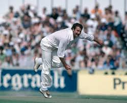
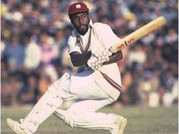

Click on the ICC below to go back to the Homepage

 |
History |
GOLDEN ERA |
Venues |
Kensington Oval (Bridgetown, Barbados): |
World records |
The West Indies team held many world records including |
What place did they get in every world cup(odi) |
1975 champions |

Malcolm Marshal played between 1977 to 1991 and held a few records
at the time he held the highest wickets take
n till 1998 at 550 and in the span of 210 matches he has gotten 560 wickets and held the record for most wickets till 1998
he was most famous for his match against india
during the group stage second match and the finale
were he got many batsmen out aswell as injured Dilip Vegatesvar
he was born 1958 and died in 1999
 ANDY ROBERTS
ANDY ROBERTS
Andy roberts was another great bowler who played during 1983 world cup
his career was great as not even in 100 matches
he got 200 wickets made his debut in 1974 and 1975
played during the 1983 world cup and named the Hitman and ended his career in 1983
he was born in 1951
 JOEL GARNER
JOEL GARNER
Joel Garner or nicknamed Big Bird
mostly known for bowling so close he was 6 foot 8 inches and had a arm to bowl
with the pace plus the height dealt tremendous damage to batsman and add the a yorker with it that
he also played during the 83 world cup and has 400 wickets in 150 matches
had his debut in 1977 and played till 1987
born in 1952

MICHAEL HOLDINGMichael Holding another member from the Quadrant was named the Whispering Death
as he was the person who delivered the fastest ball in history and got nearly 300 wickets
in less than 90 matches, born in 1951 and played between 1975 and 1983
 CURTLY AMBROSE
CURTLY AMBROSE
a great bowler born in 1963 and took around 650 wickets
in about 250 matches with his best being8/45 in test and 5/17 in ODI, he has also gotten many Ten wicket hauls and 5 wicket hauls

VIV RICHARDSSir Vivian Richards, born on March 7, 1952, in Antigua, played 121 Test matches, scoring 8,540 runs
at an average of 50.24, with 24 centuries and 45 half-centuries.
In 187 ODIs,
he scored 6,721 runs at an average of 47.00, including 11 centuries and 45 half-centuries.
Renowned for his aggressive batting and refusal to wear a helmet,
he was pivotal in the West Indies'
World Cup victories in 1975 and 1979
 BRIAN LARA
BRIAN LARA
Brian Lara, born on May 2, 1969, in Trinidad and Tobago, is one of cricket's greatest batsmen.
He played 131 Test matches, scoring 11,953 runs at an average of 52.88, with 34 centuries and 45 half-centuries,
and 299 ODIs, scoring 10,405 runs at an average of 40.48, with 19 centuries and 63 half-centuries.
Lara holds the record for the highest individual score in Test cricket (400 not out)
and first-class cricket (501 not out),
He played international cricket for the West Indies from 1990 to 2007
 CLIVE LLYOD
CLIVE LLYOD
Clive Lloyd, born on August 31, 1944, in Guyana, is a legendary former West Indian cricketer and one of the greatest captains in cricket history.
He played 110 Test matches, scoring 7,515 runs at an average of 46.67,
with 19 centuries and 87 ODIs, scoring 1,977 runs at an average of 39.54. Lloyd led the West Indies to two World Cup victories in 1975 and 1979
 CHRIS GAYLE
CHRIS GAYLE
Chris Gayle, born on September 21, 1979, in Kingston, Jamaica,is a legendary West Indian cricketer known for his explosive batting and charismatic personality.
He played 103 Test matches, scoring 7,214 runs, and 301 ODIs, scoring 10,480 runs,and holds the record for the highest individual score in T20 cricket with 175*
. Nicknamed the "Universe Boss," Gayle's impact on cricket, especially in the T20 format
<